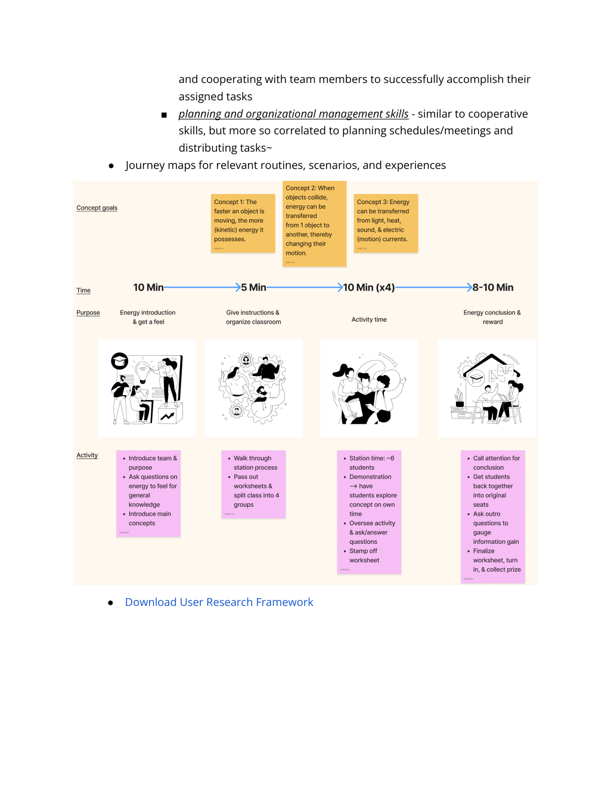
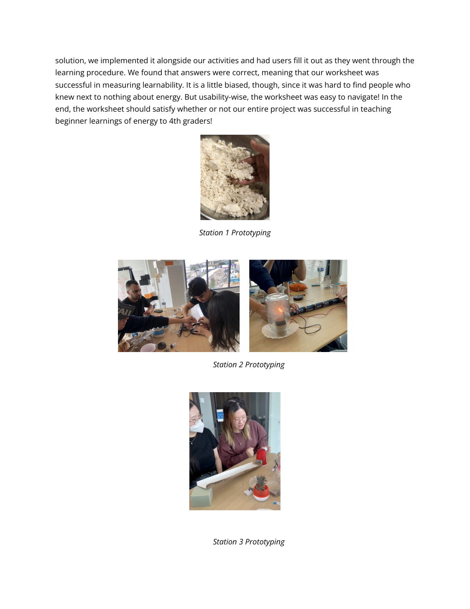
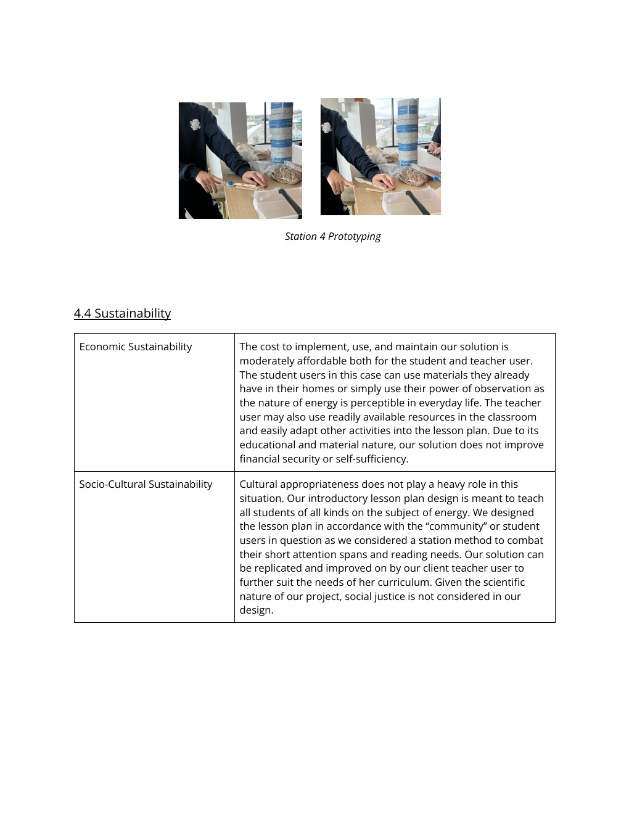

How might we make learning about energy more engaging for fourth graders?
The project started with the people—not the interface. Our team worked with a teacher and student users, combined primary and secondary research, then translated what we learned into a hands-on learning experience.

Start with the people.
We identified Samantha Lee, the teacher, and fourth-grade students as primary stakeholders. The team conducted primary interviews with the teacher and education-related participants, then used secondary research to understand learning and engagement.
Interview questions covered teaching style, lesson organization, student difficulties, available time, curriculum needs, and how students understood energy concepts.
The research surfaced a central constraint: students needed a lesson that could keep pace with shorter attention spans while remaining clear and accessible.
Turn research into design requirements.
The team translated user needs into requirements around usability, feasibility, desirability, and affordability. The lesson needed to be memorable and replicable, keep each station within a 10-minute window, remain engaging, and use accessible materials.

Make the learning hands-on.
The final direction used four stations to divide a class of 24 students into groups of six. Each station introduced an energy concept through an activity, demonstration, exploration, and worksheet-based reflection.


Test, observe, refine.
Before the workshop, the team tested the activities for functionality, time constraints, and safety. During the project, the worksheet was also evaluated for learnability and usability.
The team refined the lesson around short activity windows, clearer instructions, group movement, and hands-on exploration. The report records that all activities worked during the testing phase.
A workshop built around participation.
The final lesson introduced energy conversion, collision, energy transfer, and the relationship between speed and energy through four rotating stations. The experience was designed to make students active participants rather than passive recipients of information.
← Back to selected work